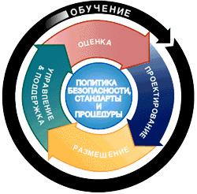
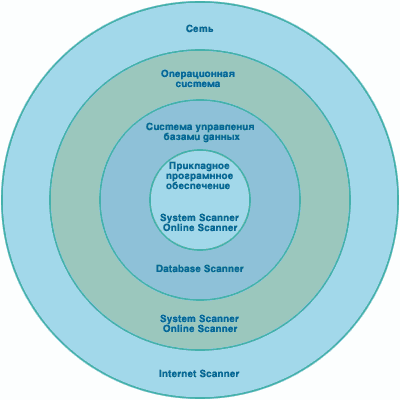
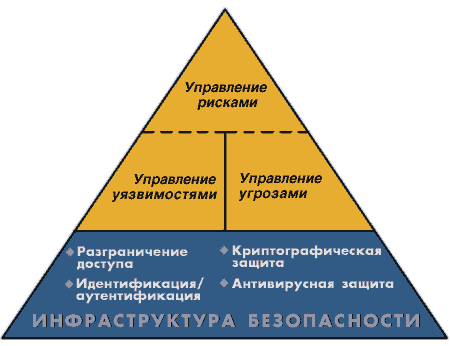

Лукацкий А.В.
Управление безопасностью требует круглосуточной бдительности, которая должна объяснять каждое изменение в корпоративной сети организации. Стоит добавить сюда отношения с поставщиками, заказчиками, партнерами и т.д., и управление безопасностью сразу станет основной задачей для управления безопасности любой организации. Разумеется, чтобы эффективно управлять безопасностью необходимо иметь некоторый подход, позволяющий эффективно использовать все имеющиеся человеческие, финансовые и иные материальные ресурсы для построения надежной системы обеспечения информационной безопасности. Каждый производитель пытается предложить свой собственный подход, основанный на его знаниях и опыте. И компания Internet Security Systems не является исключением. Она назвала свой подход Security Lifecycle Methodology. Именно о нем и пойдет речь в данной статье. Данная методология является расширением широко известной модели адаптивного управления безопасностью (Adaptive Network Security) [1].
Как уже не раз упоминалось в различных источниках, прежде чем выбирать программно-технические средства защиты информации, необходимо разработать политику безопасности, учитывающую особенности принятой в каждой организации технологии обработки информации. Разработка такой политики может вестись в минимальном объеме, не учитывающем вероятность реализации тех или иных угроз, ценность информационных ресурсов организации и т.д. или полном объеме, учитывающем все эти параметры [2]. В настоящий момент в различных странах ведутся работы по стандартизации аспектов построения комплексной политики информационной безопасности. Наиболее удачной на сегодняшний день попыткой проведения такой работы является британский стандарт BS7799 (Code of practice for information security management. British Standard BS7799, 1995) [2, 3]. Именно в соответствие с данным стандартом, а также, используя свои знания и опыт, компания ISS предложила своим заказчикам методику ADDME, названную по первым буквам составляющих ее этапов - Assess, Design, Deploy, Manage and support, Education (рис.1.).
Первый этап - оценка (assess), в процессе осуществления которого, специалисты в области информационной безопасности получают ответы на следующие вопросы: "Какие ресурсы имеются в организации?", "Какова их стоимость?", "Кто имеет к ним доступ?". На этом этапе осуществляется идентификация и инвентаризация всех ресурсов организации (рабочие станции и сервера, пользователи, данные и т.д.). Эта информация затем используется на всех последующих этапах построения комплексной системы обеспечения информационной безопасности. На данном этапе осуществляется анализ риска (risk assessment) в соответствие с BS 7799, а также поиск уязвимостей (vulnerability assessment), тестирование на проникновение (penetration assessment) и оценка угроз (threat assessment).

Рис. 1 Методика
ADDME
Второй этап - проектирование (design). На этом этапе разрабатывается политика безопасности организации и вырабатываются принципы оценки эффективности, предлагаемых в ней мер (законодательных, организационных, программно-технических). При этом учитываются собранные на первом этапе данные о пользователях, имеющихся сетевых устройствах, расположении критических информационных ресурсов и т.п.
Третий этап - развертывание (deploy). В отличие от первых двух, результатом которых являются соответствующие документы, на третьем этапе реализуются планы, разработанные на этапе проектирования. В рамках данного этапа осуществляются работы по установке средств защиты, их интеграции и тестировании в принятой технологии обработки информации, обучению пользователей требованиям политики безопасности и правилам эксплуатации установленных защитных средств.
Четвертый этап - эксплуатация (manage and support). На этом этапе оценивается эффективность принятых мер и их соответствие положениям разработанной политики безопасности. В случае возникновения инцидентов, связанных с ее нарушением, реализуется, разработанный на втором этапе план реагирования на инциденты и, как следствие, пересмотр некоторых положений политики безопасности. Изменение технологии обработки информации, появление новых технологий защиты и т.п. также является толчком к пересмотрю разработанных документов.
Последний, пятый этап - обучение (education). Этот этап является не следствием предыдущего. Обучение - это постоянный процесс, осуществляемый на всех этапах построения комплексной системы информационной безопасности. В нем участвуют все сотрудники организации - операторы, администраторы, руководители и т.д.
Однако предложение компании ISS было неполным, если бы она не реализовала основные положения методики ADDME в программно-технических решениях, которые составили основу семейства SAFEsuite.
Для любой компании
(финансовой, страховой, торговой и т.п.)
существует своя типовая информационная
система (ИС), состоящая из компонент,
решающих свои специфичные задачи, но в
общем случае ИС включает в себя 4 уровня
(рис.2.):
1. Уровень
прикладного программного обеспечения (ПО),
отвечающий за взаимодействие с
пользователем. Примером элементов ИС,
работающих на этом уровне, можно назвать
текстовый редактор WinWord, редактор
электронных таблиц Excel, почтовая программа
Outlook, системы MS Query и т.д.
2. Уровень системы управления базами
данных (СУБД), отвечающий за хранение и
обработку данных информационной системы.
Примером элементов ИС, работающих на этом
уровне, можно назвать СУБД Oracle, MS SQL Server, Sybase
и даже MS Access.
3. Уровень
операционной системы (ОС), отвечающий за
обслуживание СУБД и прикладного
программного обеспечения. Примером
элементов ИС, работающих на этом уровне,
можно назвать ОС Microsoft Windows NT, Sun Solaris, Novell
Netware.
4. Уровень сети,
отвечающий за взаимодействие узлов
информационной системы. Примером
элементов ИС, работающих на этом уровне,
можно назвать стеки протоколов TCP/IP, IPS/SPX и
SMB/NetBIOS.
Рис. 2 Уровни
информационной системы
У злоумышленников
имеется широчайший спектр возможностей по
нарушению политики безопасности, которые
могут быть осуществлены на всех четырех
вышеназванных уровнях ИС [4]. Например, для
получения несанкционированного доступа к
финансовой информации в СУБД MS SQL Server
злоумышленники могут попытаться
реализовать одну из следующих
возможностей:
1. Прочитать
записи БД при помощи SQL-запросов через
программу MS Query, которая позволяет получать
доступ к записям СУБД (уровень прикладного
ПО).
2. Прочитать нужные
данные средствами самой СУБД (уровень
СУБД).
3. Прочитать файлы
базы данных, обращаясь непосредственно к
файловой системе (уровень ОС).
4. Перехватить передаваемые по сети
данные (уровень сети).
Статистика - вещь неумолимая. Особенно когда дело касается информационной безопасности. По данным Национального отделения ФБР по компьютерным преступлениям от 85 до 97% нападений на корпоративные сети не то что не блокируются, но и не обнаруживаются. Проведенные в 1995 году испытания, которые финансировало Министерство Обороны США, показали удивительные результаты. Специальные группы экспертов, т.н. "команды тигров" ("tiger team"), провели анализ защищенности 8932 военных информационных систем. В 7860 (т.е. 88%) случаях, проникновение в "святая святых" было успешным. Администраторы только 390 из этих систем обнаружили атаки и только 19 (вдумайтесь в это число) сообщили о них [5]. Итак, только 5% систем смогли зафиксировать атаки на себя и только 0,24% от общего числа успешно атакованных систем (или иначе 4,9% от числа зафиксировавших атаки) сообщили о них в соответствующие инстанции.
Почему это происходит? На мой взгляд, это происходит не потому что, традиционные механизмы защиты, такие как разграничение доступа, фильтрация, аутентификация и другие, не лишены недостатков, а потому что при их создании не были учтены многие аспекты, связанные с современными атаками. Попробуем разобраться в них и на основе этой информации разобрать проблемы, существующие у традиционных механизмов защиты и пути их решения.
Недостатки традиционных средств защиты
Для начала необходимо ввести несколько основополагающих терминов.
Атака на информационную систему - любое действие, выполняемое нарушителем путем использования уязвимостей информационной системы для реализации угрозы.
Уязвимость информационной системы - любая характеристика или элемент информационной системы, использование которых нарушителем может привести к реализации угрозы.
Теперь рассмотрим этапы осуществления атаки (рис.3.). Первый, подготовительный, этап заключается в поиске предпосылок для осуществления той или иной атаки. На этом этапе ищутся уязвимости, использование которых приводит к реализации атаки, т.е. ко второму этапу. На третьем этапе завершается атака, "заметаются" следы и т.д. При этом первый и третий этапы сами по себе могут являться атаками. Например, поиск нарушителем уязвимостей при помощи сканеров безопасности, например, nmap или SATAN, сам по себе считается атакой.
Рис. 3 Этапы
осуществления атаки
Существующие механизмы защиты, реализованные в межсетевых экранах (firewall), серверах аутентификации, системах разграничения доступа и т.д. работают только на втором этапе. Т.е. по существу они являются средствами блокирующими, а не упреждающими атаки. В абсолютном большинстве случаев они защищают от атак, которые уже находятся в процессе осуществления. И даже если они смогли предотвратить ту или иную атаку, то намного более эффективным было бы упреждение атак, т.е. устранение самих предпосылок реализации вторжений. Комплексная система обеспечения информационной безопасности должна работать на всех трех этапах осуществления атаки. И обеспечение адекватной защиты на третьем, завершающем, этапе не менее важно, чем на первых двух. Ведь только в этом случае можно реально оценить ущерб от "успешной" атаки, а также разработать меры по устранению дальнейших попыток реализовать аналогичную атаку.
Однако даже если вы наряду с традиционными механизмами защиты используете средства поиска уязвимостей, которые своевременно обнаруживают и рекомендуют меры по устранению "слабых мест" в системе защиты, то это еще не доказывает вашей защищенности. Существуют ряд факторов, которые необходимо учитывать при использовании межсетевых экранов, систем аутентификации, систем разграничения доступа и т.д. Эти факторы характеризуют не слабости этих технологий, а особенности их архитектуры. Большинство компьютерных защитных систем построено на классических моделях разграничения доступа, разработанных в 70-х, 80-х годах в военных ведомствах. Согласно этим моделям субъекту (пользователю, программе, процессу или сетевому пакету) разрешается или запрещается доступ к какому-либо объекту (например, файлу или узлу сети) при предъявлении некоторого уникального, присущего только этому субъекту, элемента. В 80% случаев этим элементом является пароль. В других случаях таким уникальным элементом является таблетка Touch Memory, Smart или Proximity Card, биометрические характеристики пользователя и т.д. Для сетевого пакета таким элементом являются адреса или флаги, находящиеся в заголовке пакета, а также некоторые другие параметры.
Можно заметить, что самым слабым звеном этой схемы является уникальный элемент. Если нарушитель каким-либо образом получил этот самый элемент и предъявил системе защиты, то она воспринимает его, как "своего" и разрешает действовать в рамках того субъекта, секретным элементом которого несанкционированно воспользовались. При современных темпах развития технологий получить доступ к такому секретному элементу не составляет большого труда. Его можно "подслушать" при передаче по сети при помощи анализаторов протоколов (sniffer). Его можно подобрать при помощи специальных программ, например, при помощи L0phtCrack или Crack. И так далее. А дальше даже самый мощный и надежный межсетевой экран не защитит от проникновения в корпоративную сеть нарушителя. Мало того, межсетевой экран даже не зафиксирует нарушения, так как для него нарушитель, укравший пароль, является авторизованным пользователем.
Другой не менее распространенный пример. В каждой организации есть пользователи, обладающие практически неограниченными правами в сети. Это сетевые администраторы. Они никому неподконтрольны и могут делать в сети практически все, что угодно. Как правило, они используют свои неограниченные права для выполнения своих функциональных обязанностей. Но представьте на минуту, что администратор чем-то обижен. Будь-то низкой зарплатой, недооценкой его возможностей, местью и т.п. Известны случаи, когда такие обиженные администраторы "портили кровь" не одной компании и приводили к очень серьезному ущербу.
"Почему раньше эти проблемы не были замечены?" - спросите вы. Это не совсем так. Эти проблемы были известны, только они не выходили на первый план. Происходило это по нескольким причинам. Во-первых, сети получили широкое распространение совсем недавно, десять-двадцать лет назад. Во-вторых, модели разграничения доступа, на основе которых строятся современные системы защиты, были разработаны в военных ведомствах, в которых своя специфика. И, наконец, количество уязвимостей сетевых операционных систем и прикладных программ и возможных атак на них растет с угрожающей быстротой. Ситуация усугубляется еще и тем, что многие администраторы безопасности, как это ни парадоксально звучит, не осознают всей серьезности проблемы сетевой безопасности. Немногие из них имеют время для анализа сообщений о новых обнаруженных угрозах и уязвимостях. Еще меньшее число людей имеют возможность для проведения аудита и постоянного мониторинга сети. "Сетевые администраторы не имеют возможности вовремя реагировать на все возрастающее число уязвимостей", - говорит Джим Харлей, старший аналитик компании Aberdeen Group [1].
Текущее состояние дел
Постоянно приходится видеть, что организации используют частичные подходы для решения возникающих у них проблем с защитой. Эти подходы основаны на их восприятии рисков безопасности и текущем уровне доступных ресурсов. Администраторы безопасности имеют тенденцию реагировать только на те риски, которые им понятны. На самом же деле таких рисков может быть намного больше. Эти администраторы понимают, что в их сети могут быть зафиксированы неправильное использование ресурсов системы и внешние атаки, но они зачастую немного знают об истинных уязвимостях в сетях, операционных системах и приложениях, которые они применяют в своей повседневной деятельности. Они прекрасно понимают, что уровень защиты можно повысить с помощью таких технических средств, как межсетевые экраны, криптографические системы, системы аутентификации или средства разграничения доступа [6].
Без всестороннего комплексного подхода, который устанавливает единую политику безопасности и строгий текущий контроль, существенно снизить сетевые риски практически невозможно. Постоянное развитие информационных технологий вызывает целый ряд новых проблем. Как минимум, эффективная система обеспечения информационной безопасности предполагает наличие хорошо тренированного персонала, который:
Непрерывное развитие сетевых технологий при отсутствии постоянно проводимого анализа их безопасности приводит к тому, что с течением времени защищенность сети падает, т.к. появляются новые неучтенные угрозы и уязвимости системы, противопоставить которым нечего.
Адаптивная безопасность сети
Как уже упоминалось в [1] работы по устранению вышеназванных недостатков велись различными государственными организациями. Эти работы подхватили и другие компании, которые давно известны на рынке средств информационной безопасности. К таким компаниям можно отнести Internet Security Systems (ISS), Network Associates (NAI), CheckPoint Technologies, Axent Technologies и т.д. В России аналогичные работы ведет НИП "Информзащита". Каждая компания-разработчик дала свое название новой технологии управления безопасностью. Например, ISS назвала свой подход "моделью адаптивной сетевой безопасности" (Adaptive Network Security Model, ANSM), компания NAI свое решение назвала "активной безопасностью" (Active Security), а НИП "Информзащита" придерживается названия "технология управления информационной безопасностью "Беркут". Но суть у всех этих подходов одна - они позволяют обеспечивать защиту в реальном режиме времени, адаптируясь к постоянным изменениям в информационной инфраструктуре.
Адаптивная безопасность сети состоит из трех основных элементов [7]:
Можно провести следующую аналогию с анализом защищенности - охранник, периодически обходящий все этажи здания в поисках открытых дверей, незакрытых окон и других проблем. Также действует и система анализа защищенности. Только в качестве здания выступает корпоративная сеть, а в качестве незакрытых окон и дверей - уязвимости.
Если обратиться к рисунку 3, то средства анализа защищенности работают на первом этапе осуществления атаки. Обнаруживая и вовремя устраняя уязвимости, они тем самым, устраняют саму возможность реализации атаки, что позволяет снизить затраты (финансовые, ресурсные, человеческие, и т.д.) на эксплуатацию средств защиты. Технологии анализа защищенности являются действенным методом, позволяющим проанализировать и реализовать политику сетевой безопасности прежде, чем осуществится попытка ее нарушения снаружи или изнутри организации.
Системы анализа защищенности проводят поиск уязвимостей, постепенно наращивая число проверок и "углубляясь" в информационную систему, исследуя все ее уровни (рис.2.). Процесс использования этих систем (на примере решений компании Internet Security Systems) можно схематично показать в виде следующего рисунка (рис.4.). Т.е. на первом этапе используется система Internet Scanner, которая моделирует действия внешних злоумышленников, пытающихся обнаружить уязвимости корпоративной сети и использовать их для проникновения в нее. Система Internet Scanner, как и другие сканеры, функционирующие на уровне сети, позволяет взглянуть на безопасность "со стороны", т.е. так, как ваша сеть видна внешнему наблюдателю. На втором этапе (на уровне ОС) системы анализа защищенности (в приводим примере System Scanner и Online Scanner) позволят взглянуть на безопасность "изнутри", т.е. когда злоумышленник уже смог проникнуть через средства сетевой периметровой защиты и пытаются получить доступ к тому или иному компьютеру корпоративной сети. Ну и, наконец, на третьем и четвертом этапах применяются средства анализа защищенности СУБД и конкретных приложений, в т.ч. и пользовательских (Database Scanner и другие).

Рис. 4 Последовательное
применение систем анализа
защищенности
Обнаружение атак является процессом оценки подозрительных действий, которые происходят в корпоративной сети. Обнаружение атак реализуется посредством анализа или журналов регистрации операционной системы и прикладного ПО, или сетевого трафика в реальном времени. Компоненты обнаружения атак, размещенные на узлах или сегментах сети, оценивают различные действия, в т.ч. и использующие известные уязвимости. И вновь проводя аналогию с миром физической защиты, системы обнаружения атак - это охранные видеокамеры и различные датчики (движения, давления и т.д.). У вас может на входе в здание (корпоративную сеть) может и обязательно должен стоять охранник (межсетевой экран). Но квалифицированный и опытный злоумышленник может его обмануть, маскируясь под сотрудника фирмы (украв идентификатор и пароль пользователя) или проникая через "черный ход" (через модем). В этом случае датчики (агенты системы обнаружения атак) своевременно обнаружат такие несанкционированные действия.
И вновь обращаясь к рисунку 3, можно заметить, что средства обнаружения атак функционируют сразу на двух этапах - втором и третьем. На втором этапе эти средства дополняют традиционные механизмы новыми функциями, повышающими защищенность корпоративной сети. Например, в описанном выше случае с нарушителем, укравшим пароль и проникшим в сеть через межсетевой экран, система обнаружения атак сможет обнаружить и предотвратить действия, отличающие от нормального поведения пользователя, у которого украли пароль. Также эффективно системы обнаружения атак будут блокировать и враждебные действия привилегированных пользователей (администраторов). И, наконец, эти системы одинаково эффективно функционируют и для защиты периметра корпоративной сети, дополняя возможности межсетевых экранов, и для защиты внутренних сегментов сети. Тем более что по статистике до 70% всех компьютерных инцидентов происходит именно изнутри организации.
Как частный и наиболее распространенный случай применения систем обнаружения атак я хотел бы привести ситуацию с неконтролируемым применением модемов, которые превращают сеть даже защищенную межсетевым экраном в решето. Системы анализа защищенности позволяют обнаружить такие модемы, а системы обнаружения атак - идентифицировать и предотвратить несанкционированные действия, осуществляемые через них.
Аналогично средствам анализа защищенности средства обнаружения атак также функционируют на всех уровнях корпоративной сети. В качестве примера также можно привести решение компании ISS, как лидера в области обнаружения атак и анализа защищенности. Данная компания предлагает семейство RealSecure, системы которого обнаруживают атаки, направленные на сетевое оборудование (RealSecure Network Sensor и RealSecure Appliance), операционные системы (RealSecure OS Sensor и ReaLSecure Server Sensor), базы данных (RealSecure OS Sensor и RealSecure Server Sensor) и т.д.
Использование модели адаптивной безопасности сети (рис.5.) позволяет контролировать практически все угрозы, и своевременно реагировать на них высокоэффективным способом, позволяющим не только устранить уязвимости, которые могут привести к реализации угрозы, но и проанализировать условия, приводящие к появлению уязвимостей. Эта модель также позволяет уменьшить злоупотребления в сети, повысить осведомленность пользователей, администраторов и руководство компании о событиях безопасности в сети.

Рис. 5 Модель
адаптивной безопасности
Необходимо заметить, что данная модель не отбрасывает уже используемые механизмы защиты (разграничение доступа, аутентификация и т.д.). Она расширяет их функциональность за счет новых технологий. Таким образом, все, что надо сделать организациям, чтобы привести свою систему обеспечения информационной безопасности в соответствие современным требованиям, - это дополнить имеющиеся решения тремя новыми компонентами, отвечающими за анализ защищенности, обнаружение атак и управление рисками.
Заканчивая разговор об адаптивной безопасности сети, хочется привести несколько примеров ее конкретных реализаций. Очевидно, что одна система не может (чтобы ни говорили поставщики таких систем) эффективно реализовать все описанные технологии. Поэтому для реализации концепции адаптивной безопасности необходимо использовать совокупность систем, объединенных единым замыслом. На сегодняшний день по этому пути идут многие, но более или менее законченные решения предлагают только две компании: Internet Security Systems и Axent Technologies. В этом же направлении движутся компании Network Associates, Cisco Systems, Hewlett Packard, НИП "Информзащита" и т.д.
Компания Internet Security Systems, Inc. разработала семейство SAFEsuite, которое на сегодняшний день является первым и пока единственным комплексом систем, который включает в себя все компоненты модели адаптивного управления безопасностью сети:
По данным консалтинговой компании IDC, опубликованным в августе 1999 года, доля семейства SAFEsuite составляет 52% всего мирового рынка средств анализа защищенности и обнаружения атак [8].
Система анализа защищенности Internet Scanner предназначена для проведения регулярных, всесторонних или выборочных тестов любых систем, основанных на стеке протоколов TCP/IP (сетевых сервисов, операционных систем, распространенного прикладного программного обеспечения, маршрутизаторов, межсетевых экранов, Web-серверов и т.п). На основе проведенных тестов система Internet Scanner вырабатывает отчеты, содержащие подробное описание каждой обнаруженной уязвимости, ее расположение на узлах корпоративной сети и рекомендации по их коррекции или устранению. 2 сентября 1998 года система была сертифицирована в Гостехкомиссии России (сертификат № 195). На сегодняшний день это единственная система анализа защищенности, прошедшая сертификацию в государственных органах сертификации средств защиты информации.
Главная задача систем анализа защищенности компании ISS - собрать как можно больше информации о компьютерах клиента. Иногда это лучше всего сделать дистанционно через всю сеть с помощью Internet Scanner, но в некоторых случаях это лучше всего реализовать с локального компьютера. Например, проверки "слабых" паролей пользователей для увеличения скорости работы рекомендуется проводить именно с локального компьютера. Аналогичным образом, с локального компьютера проще проверить установленные патчи и обновления операционной системы или приложений. Зачастую такие проверки просто невозможно реализовать дистанционно. Например, если удаленный доступ к системному реестру запрещен, то получить сведения об установленных Service Packs, patch и hotfix, не так-то просто.
Система Internet Scanner является превосходным инструментом для анализа сетевых уязвимостей ОС Windows и Unix. Но дополнительный взгляд на анализируемые системы, осуществляемый системой System Scanner, делает уровень проведения анализа защищенности с помощью продуктов ISS гораздо более высоким, чем, возможно, могут предоставить другие продукты анализа защищенности. Производители, как правило, реализуют только анализ защищенности на уровне сети, пренебрегая локальным сканированием на уровне операционной системы, и совсем забывая об анализе защищенности приложений. Система System Scanner обнаруживает большое количество уязвимостей, которые не видны при дистанционном сканировании через сеть, но представляют большую опасность для Unix- и Windows-систем. На сегодняшний день общее число осуществляемых проверок в системе System Scanner превышает 450 для платформы Windows (NT и 2000) и 575 для платформы Unix (более 20 различных Unix). Аналогичные действия, но для платформы Windows 95, 98 реализует система Online Scanner.
Система Database Scanner, входящая в семейство SAFEsuite, завершает линию продуктов компании ISS, предназначенных для анализа защищенности. Система Database Scanner обнаруживает различные проблемы (их число превышает 300), связанные с безопасностью баз данных в трех основных областях: аутентификация, авторизация и целостность. Дополнительно анализируемая система управления базами данных (СУБД) проверяется на соответствие требованиям перехода к 2000 году. Встроенная база знаний (Knowledge Base), доступная непосредственно из создаваемых отчетов, рекомендует корректирующие действия, которые позволяют устранить обнаруженные уязвимости. Система Database Scanner может быть использована для СУБД Microsoft SQL Server, Oracle и Sybase Adaptive Server. Общее число уязвимостей, обнаруживаемых всеми четырьмя названными системами анализа защищенности, превышает 2400.
В семейство SAFEsuite входит система RealSecure, которая позволяет в реальном режиме времени обнаруживать враждебную деятельность на отдельных узлах (на уровне операционной системы), распознавать атаки (более 700 атак) на Вашу корпоративную сеть (на уровне сети) и реагировать на них соответствующим образом. При этом, данная система может использоваться как для защиты внешнего доступа (например, из Internet), так и для защиты во внутренней сети. Ведь по статистике до 75% всех инцидентов происходит по вине сотрудников организации. Система RealSecure походит как нельзя лучше для защиты в этом случае. Системы RealSecure не снижает производительности сети не только в случае работы с Ethernet, Token Ring, но и при работе с высокоскоростными магистралями типа Fast Ethernet и FDDI.
Система RealSecure состоит из
нескольких компонентов. Первый компонент
Network Sensor отвечает за обнаружение и
реагирование на атаки на уровне сети.
Компонент System Sensor устанавливается на
контролируемый узел и обнаруживает
несанкционированную деятельность,
осуществляемую на данном узле, на уровне
операционной системы. Компонент Server Sensor
объединяет в себе возможности предыдущих
двух компонентов и обнаруживает все (и
системные и сетевые) атаки на конкретный
узел сети. И, наконец, RealSecure Appliance - это
программно-аппаратное решение, которое
предназначено для обнаружения сетевых
атак в высокоскоростных сетях.
Возможности реагирования на атаки
является определяющими для любой системы
обнаружения атак. В системе RealSecure такие
варианты можно разделить на три типа:
уведомление, запоминание и активное
реагирование.
Уведомления можно посылать на одну или несколько консолей управления, по электронной почте или по факсу, телефону и пейджеру. Предусмотрена генерация управляющих SNMP-последовательностей для показа информации о контролируемых событиях в системах сетевого управления (например, HP OpenView, CA Unicenter, Tivoli TME10).
В случае осуществления атаки, которая может привести к выведению из строя узлов корпоративной сети, возможно автоматическое завершение соединения с атакующим узлом, блокировка учетной записи нарушителя (если он является сотрудником организации) или реконфигурация межсетевых экранов и маршрутизаторов таким образом, чтобы в дальнейшем соединения с атакующим узлом были запрещены. В настоящий момент поддерживаются межсетевые экраны CheckPoint Firewall-1 и Lucent Managed Firewall, а также маршрутизаторы и коммутаторы компаний Cisco, Nortel и ODS Networks. Если названных вариантов реагирования недостаточно, то администратор может создать свои собственные сценарии обработки контролируемых событий.
Достаточно новым направлением в области информационной безопасности является создание средств, интегрирующих в себе возможности управления разнородными средствами защиты информации, используемыми в организации. Система SAFEsuite Decisions позволяет собирать, анализировать и обобщать сведения, получаемые от различных средств защиты информации, установленных в различных точках организации. Кроме того при помощи этого мощного и уникального средства можно прогнозировать изменение уровня защищенности сети с течением времени. К поддерживаемым в текущей версии средствам можно отнести: все продукты компании ISS и межсетевые экраны CheckPoint Firewall-1 и Gauntlet (и как следствие, российские межсетевые экраны Пандора и Застава-Джет, разработанные на базе Gauntlet). Кроме того, существует программный интерфейс (SDK), который позволяет подключать к SAFEsuite Decisions и другие средства защиты.
Итак, если Вы хотите:
то решение этих проблем достигается за счет применения модели адаптивного управления безопасностью.
Список литературы
[1] А. Лукацкий.
Адаптивная безопасность сети.
Компьютер-Пресс, №8, 1999
[2] С.
Симонов. Анализ рисков, управление рисками.
JetInfo, №1, 1999
[3] С. Симонов.
Аудит безопасности информационных систем.
JetInfo, №9, 1999
[4] А. Лукацкий.
Атаки на информационные системы. Типы и
объекты воздействия. Электроника: Наука,
Технология, Бизнес. №1, 2000
[5]
Richard Power. Current and Future Danger: A CSI Primer on Computer Crime and
Information Warfare. Computer Security Institute. 1995
[6] А.В. Лукацкий. Отмычки к "поясу
невинности". Business Online, №5, 2000
[7] А.В. Лукацкий Адаптивное
управление защитой. "Сети. Глобальные сети
и телекоммуникации". №10, 1999
[8] Abner Germanow. Plugging the Holes in eCommerce: The Market for
Intrusion Detection and Vulnerability Assessment Software, 1999-2003.
International Data Corporation, August, 1999
Об авторе:
Алексей Викторович Лукацкий, ведущий специалист Научно-инженерного предприятия "Информзащита" (Москва), сертифицированный инструктор по безопасности компании Internet Security Systems, сертифицированный инженер по безопасности компании CheckPoint Technologies. Связаться с ним можно по тел. (095) 289-8998 или e-mail: luka@infosec.ru.
06 июня 2000 г.